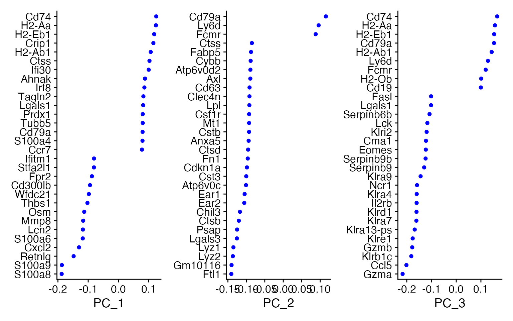
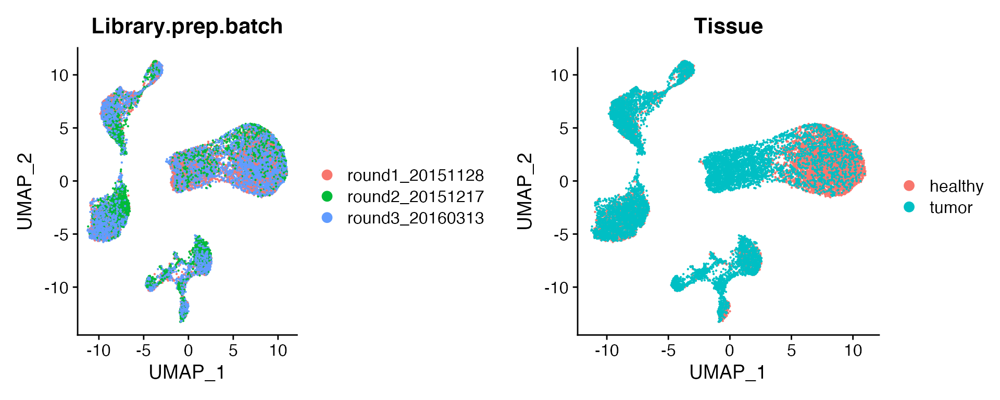
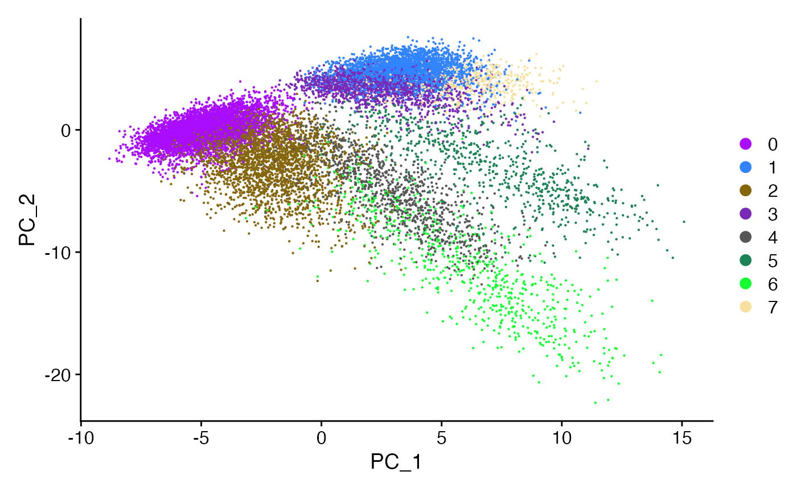
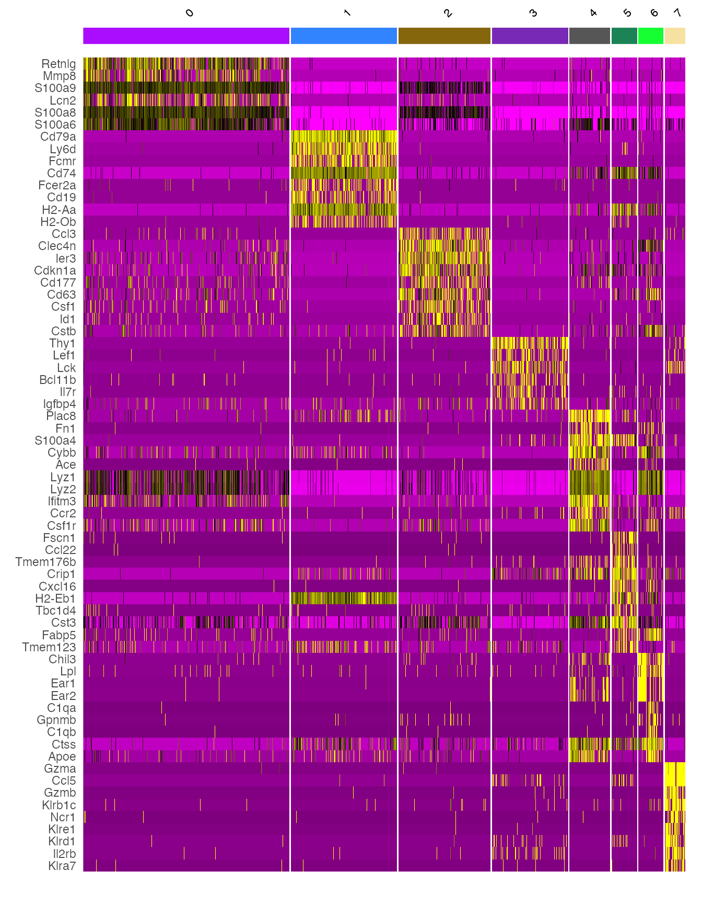
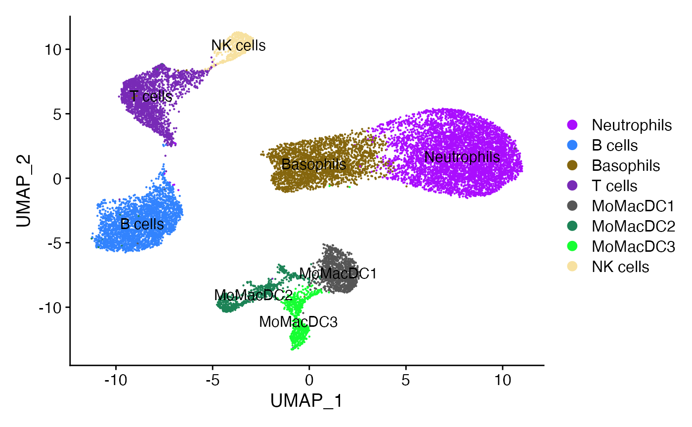
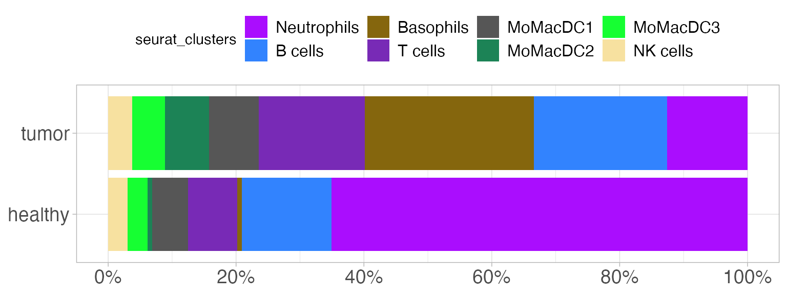

Introduction to single cell RNA-seq analysis
Rene Welch
Source:vignettes/intro_sc_analysis.Rmd
intro_sc_analysis.RmdWorkshop description
In exploring and analyzing single cell RNA sequencing data, there are a number of key concepts, such as filtering, scaling, dimensionality reduction, hypothesis testing, clustering and visualization, that need to be understood.
The idea behind this small session is to provide tools to start analyzing a single cell RNA-seq dataset, we are going to focus on how to utilize the R package Seurat to provide a dimensionality reduction visualization. These notes are based on this tutorial
Introduction
There are many steps involved in analyzing a single cell RNA-seq experiment. Usually, we start by aligning the sequence reads into a reference genome to quantify the number of reads mapped to each gene. This results into a table of counts, which we are going to use to perform statistical analysis using R. For single cell RNA-seq data, there are many tools to perform this step, but today we are going to utilize from an already curated dataset, and show how to process it with the R package Seurat.
First, let’s load all the packages we will need to analyze the data:
Getting the data
First, we need to download a dataset. Fortunately, the scRNAseq package provides a variety of already curated datasets:
lung_data <- ZilionisLungData("mouse") colnames(lung_data) <- make.unique(colnames(lung_data), sep = "_") colData(lung_data)[["Barcode"]] <- colnames(lung_data) logcounts(lung_data) <- as.matrix(log10(1 + counts(lung_data))) lung_data <- as.Seurat(lung_data, project = "lung")
Now, Seurat provides all sorts of useful information on our dataset:
lung_data #> An object of class Seurat #> 28205 features across 17549 samples within 1 assay #> Active assay: RNA (28205 features, 0 variable features) #> 1 dimensional reduction calculated: SPRING
To access the metadata, i.e. information for each cell / droplet, we do:
head(lung_data@meta.data) #> Library Barcode Animal Run Tissue Used Library.prep.batch Total.counts #> bc0001 h_1_1 bc0001 h_1 1 healthy TRUE round1_20151128 11915 #> bc0002 h_1_1 bc0002 h_1 1 healthy TRUE round1_20151128 11675 #> bc0003 h_1_1 bc0003 h_1 1 healthy TRUE round1_20151128 12536 #> bc0004 h_1_1 bc0004 h_1 1 healthy TRUE round1_20151128 12499 #> bc0005 h_1_1 bc0005 h_1 1 healthy TRUE round1_20151128 9586 #> bc0006 h_1_1 bc0006 h_1 1 healthy TRUE round1_20151128 10553 #> Percent.counts.from.mitochondrial.genes Most.likely.Immgen.cell.type #> bc0001 0.210 GN_Arth_SynF #> bc0002 0.240 GN_Arth_SynF #> bc0003 2.728 MF_PPAR-_Lu #> bc0004 2.728 MF_Lu #> bc0005 2.378 MF_Lu #> bc0006 1.516 Mo_Lu #> Major.cell.type Minor.subset #> bc0001 Neutrophils N1 #> bc0002 Neutrophils N1 #> bc0003 MoMacDC Mac4 #> bc0004 MoMacDC Mac4 #> bc0005 MoMacDC Mac4 #> bc0006 MoMacDC Mono3
This is a curated dataset, thus it already contains the cell labels. At the moment we are going to assume that we don’t know that yet.
Quick note: This data could be a bit large for some laptops, so in case of trouble running this analysis, then it could be useful to pick another dataset. To list the datasets provided by the scRNAseq package use:
Quality control
Usually to do a quick quality control, the idea behind this step is that we would like to not have cells in our dataset with an abnormally large / small # of genes (we quantify the # of genes for a cell/droplet as the # of genes with at least 1 read). The reasons for them are:
- Cell doublets or multiplets may exhibit and abnormally high number of genes
- Low-quality cells or empty droplets will often have few genes
First, we add a pair of QC metric to the meta.data, and the explore their distribution:
lung_data[["nCount_RNA"]] <- colSums(lung_data[["RNA"]]@counts) lung_data[["nFeature_RNA"]] <- apply(lung_data[["RNA"]]@counts, 2, function(x)sum(x > 0)) lung_data[["mt_perc"]] <- Seurat::PercentageFeatureSet(lung_data, "^mt-") VlnPlot(lung_data, features = c("nFeature_RNA", "nCount_RNA", "mt_perc"), ncol = 3)

Disclaimer It is always good to check the gene naming conventions. In the Seurat tutorial, the mitochondrial genes are searched by looking for the MT pattern at the start of every gene symbol. In this dataset, the pattern that we searched was mt so defining the percentage of mitochondrial genes in a cell with the MT would result in 0% for every cell!
Then, we compare the first two quantities, as expected both metrics are very correlated:
FeatureScatter(lung_data, feature1 = "nCount_RNA", feature2 = "nFeature_RNA", cols = "black") + geom_smooth(se = FALSE) + geom_vline(xintercept = 12e3, linetype = 2, colour = "red") + geom_hline(yintercept = 3e3, linetype = 2, colour = "red")
We remove the cells with more than 12K reads or more than 3K genes and normalize the data, the default method uses logarithms with a pseudo-count and a scaling factor, which could be good for a first pass. However, many more methods for normalization have been developed, thus it may is possible that there are methods more useful for different datasets.
lung_data <- subset(lung_data, subset = nFeature_RNA <= 3e3 & nFeature_RNA <= 12e3 & mt_perc <= 20 & Used) ## writing the default parameters, explicitly lung_data <- NormalizeData(lung_data, normalization.method = "LogNormalize", scale.factor = 10000)
Identification of most variable genes
The figure shows some association between the average and variances gene expression. The point at the end is that focusing in the most variable genes helps to highlight the signal of single cell datasets. We are going to identify the top 2K most variable genes, but lets keep in mind that this may remove some genes of interest.
lung_data <- FindVariableFeatures(lung_data, selection.method = "vst", nfeatures = 2000) plot1 <- VariableFeaturePlot(lung_data, log = TRUE) top_genes <- head(VariableFeatures(lung_data), 20) LabelPoints(plot1, points = top_genes, repel = TRUE)
Principal Components Analysis
The next steps are to scale the data and to compute the principal components of the data. This is necessary because Seurat will utilize the components to calculate how do cells relate to each other. These steps are slow when we use all the genes in the data, so it is common to use the list of most variable genes.
variable_genes <- VariableFeatures(object = lung_data) lung_data <- ScaleData(lung_data, features = variable_genes) lung_data <- RunPCA(lung_data, features = VariableFeatures(object = lung_data))
For example, we can visualize top genes that are driving the variance explained by each component:
VizDimLoadings(lung_data, dims = 1:3, reduction = "pca", ncol = 3)

Then, the next question to solve is how many components to pick. There are many alternatives to solve this question, but the simplest alternative is to pick them by the Elbow criteria, which is to compare the std. deviation explained by each components with its rank, and pick the previous components before we observe and elbow pattern.
ElbowPlot(lung_data)
This is not an exact approach, so we according to the figure above, we would pick the top 2, 7 or 12 components.
Clustering the cells
This is the most important part of the analysis so far, Seurat applies a graph based clustering approach, and to determine the number of clusters it is going to be necessary to tune the two parameters: the top # of principal components and the resolution.
- The top # principal components determines how detailed is going to be our approximation when computing the distance between any two cells
- The resolution determines the size of the clusters that the algorithm finds. Smaller values will result in larger clusters or less clusters.
Seurat utilizes the Louvain algorithm to cluster the cells in a neighbor graph, and it works by maximizing the “modularity” of the cells network, so it tries to group together the nodes that very similar among them, and to maximize the distance between different clusters / modules.
lung_data <- FindNeighbors(lung_data, dims = 1:7) lung_data <- FindClusters(lung_data, resolution = .3) #> Modularity Optimizer version 1.3.0 by Ludo Waltman and Nees Jan van Eck #> #> Number of nodes: 15904 #> Number of edges: 498213 #> #> Running Louvain algorithm... #> Maximum modularity in 10 random starts: 0.9347 #> Number of communities: 8 #> Elapsed time: 2 seconds ## this is to make the cluster colors agree below nclusters <- nlevels(lung_data@meta.data$seurat_clusters) colors <- pals::alphabet2(nclusters) names(colors) <- NULL
UMAP
To get a UMAP representation of the data we utilize:
lung_data <- RunUMAP(lung_data, dims = 1:7)
Then we can visualize how the cells are distributed under different discrete meta.data variables. The important thing to notice in these figures is that the cells are mixed regardless of batch / tissue.
plot_grid( DimPlot(lung_data, reduction = "umap", group.by = "Library.prep.batch"), DimPlot(lung_data, reduction = "umap", group.by = "Tissue"), nrow = 1 )

If this was a bulk RNA-seq dataset, we would visualize the samples using principal components. However, doing this with single cell we get a visualization that is not getting advantage of the whole space, mostly because:
- It is a linear transformation of the data
- There are other components representing the data variation, so sometimes dots from a cluster overlay with dots from other cluster
DimPlot(lung_data, reduction = "pca", cols = colors)

Therefore we need to depends on other dimensionality reduction methods like t-SNE, UMAP, etc. For example, we use UMAP and we can notice:
- We can see that all clusters are represented, i.e. all are in front
- The cells in each cluster are grouped together, e.g. for clusters 7 and 8 the difference is the most striking
- The clusters that were close to each other are still close, e.g.
1 ~ 3 ~ 7,0 ~ 2, etc - The clustering algorithm is not perfect, it looks like there are clusters that can be further separated, thus we need to increase the resolution
DimPlot(lung_data, reduction = "umap", cols = colors)
Finally, the table below illustrates that the clusters computed by Seurat approximately coincides with the major cell types found in the manuscript:
lung_data@meta.data %>% select(Major.cell.type, seurat_clusters) %>% table() #> seurat_clusters #> Major.cell.type 0 1 2 3 4 5 6 7 #> B cells 1 2795 0 7 2 4 2 2 #> Basophils 3 0 27 1 2 0 1 0 #> MoMacDC 13 8 10 4 1081 616 637 0 #> Neutrophils 5523 9 2438 7 8 1 31 0 #> NK cells 0 1 0 90 0 0 0 539 #> pDC 0 1 0 3 1 57 0 0 #> T cells 2 35 2 1924 0 4 0 12
Disclaimer: UMAP is similar to t-SNE, and we would use the runTSNE instead of runUMAP:
Find markers per cluster
Finally to interpret the cluster, we can glance into few of the top genes that are representative into each cluster. This is done by using the FindAllMarkers function, which searches the differentially expressed genes when comparing the cells in every cluster against the others. Below we find all the markers and pick the top 10 genes in average log2 fold change, i.e. the genes with the highest relative expression in one cluster against the rest.
lung_data_markers <- FindAllMarkers( lung_data, only.pos = TRUE, min.pct = 0.25, logfc.threshold = 0.25) top_markers <- lung_data_markers %>% group_by(cluster) %>% top_n(n = 10, wt = avg_log2FC)
We can visualize these markers into a heatmap, where the rows are a genes and each column is one of the many cells. The yellow / brown color mean that a gene is expressed in a given cell.

Changing the cluster names, we get:
lung_data@meta.data$seurat_clusters <- forcats::fct_recode(lung_data@meta.data$seurat_clusters, `Neutrophils` = "0", `B cells` = "1", `Basophils` = "2", `T cells` = "3", `MoMacDC1` = "4", `MoMacDC2` = "5", `MoMacDC3` = "6", `NK cells` = "7") names(colors) <- levels(lung_data@meta.data$seurat_clusters) DimPlot(lung_data, reduction = "umap", cols = colors, group.by = "seurat_clusters", label = TRUE) + ggtitle(NULL)

Finally, we compare the composition of tumor vs healthy cells:
lung_data@meta.data %>% group_by(Tissue) %>% dplyr::count(seurat_clusters) %>% mutate(p = n / sum(n)) %>% ggplot(aes(y = Tissue, x = p, fill = seurat_clusters)) + geom_col() + theme_light() + theme(legend.position = "top", axis.title = element_blank(), axis.text = element_text(size = 14), legend.text = element_text(size = 12)) + scale_fill_manual(values = colors) + scale_x_continuous(labels = scales::percent_format(1), breaks = scales::breaks_pretty(n = 4))

Final thoughts
There is no an infallible recipe for analyzing any dataset, in particular single cell experiments had become more complex. In this document, we show only one strategy to start analyzing these sort of experiments.
In this tutorial, we utilized data of a recent experiment and showed with simple instructions how to approximately replicate some of the clustering.